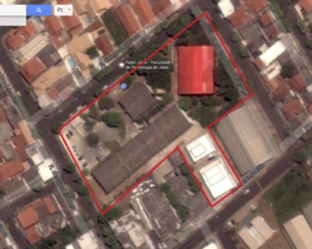

Faculdade de Tecnologia de Jales - "Professor José Camargo"
Fatec
Faculdade de Tecnologia de Jales - "Professor José Camargo"
A Fatec é uma faculdade publica de tecnologia onde são integrados cursos superiores como;
ANÁLISE E DESENVOLVIMENTO DE SISTEMAS - ADS,
AGRONEGÓCIO,
GESTÃO EMPRESARIAL e SISTEMAS PARA INTERNET,
Os cursos tem duração de 3 anos, e a faculdade tem exelente estrutura para capacitar profissionais de cada área.
E professores ótimos com Mestrado e Doutorado e super dedicados a seus alunos.
FAÇA O VESTIBULAR E SE JUNTE A NÓS SEM CUSTO ALGUM.
Informações
"
Nome completo: Faculdade de Tecnologia Prof. José Camargo – Fatec Jales
Endereço: Rua Vicente Leporace, nº 2630, Jardim Trianon, CEP 15.703-116 - Jales/SP
Telefones: (17) 36216911/ (17)3632 2239 – CNPJ 62.823.257/0171-76
Responsável pela Instituição: Dr.ª Andrea Piranhe da Silva
Mantenedora: Centro Paula Souza
Endereço: Rua dos Andradas, nº 140, Santa Ifigênia, CEP 01208-000 - São Paulo/SP
Telefone: (11) 3324-3300
Responsável pela Mantenedora: Diretora Superintendente: Laura Laganá
Vice-Diretor Superintendente: Luiz Antonio Tozi
SOBRE O CENTRO PAULA SOUZA
O Centro Paula Souza é uma autarquia do Governo do Estado de São Paulo, vinculada à Secretaria de Desenvolvimento Econômico, Ciência, Tecnologia e Inovação (SDECTI). A instituição administra 220 Escolas Técnicas Estaduais (Etecs) e 66 Faculdades de Tecnologia (Fatecs), reunindo mais de 283 mil alunos em cursos técnicos de nível médio e superiores tecnológicos, em mais de 300 municípios (CPS, 2015).
Nas Fatecs, mais de 73 mil alunos estão matriculados em 71 cursos de graduação tecnológica, em diversas áreas, como Construção Civil, Mecânica, Informática, Tecnologia da Informação, Turismo, entre outras. Além da graduação, são oferecidos cursos de pós-graduação, atualização tecnológica e extensão (CPS, 2015)
A instituição foi criada pelo decreto-lei de 6 de outubro de 1969, como resultado de um grupo de trabalho para avaliar a viabilidade de implantação gradativa de uma rede de cursos superiores de tecnologia com duração de dois e três anos (CPS, 2015).
A trajetória do Centro Paula Souza vai além de seus 45 anos de fundação. Sua memória mistura-se com a história centenária do ensino profissional público em São Paulo. Em 1969, o órgão nasceu com a missão de organizar os primeiros cursos superiores de tecnologia, mas no decorrer das décadas, acabou englobando também a educação profissional do estado em nível médio, absorvendo unidades já existentes e construindo novas Etecs e Fatecs para expandir o ensino profissional a todas as regiões do Estado (CPS, 2015).
SOBRE A FATEC JALES
A Fatec Jales, criada pelo Decreto nº 52.122, de 3 de setembro de 2007, publicado no DOE de 4 de setembro de 2007, iniciou suas atividades em 10 de setembro de 2007, instalada em espaço concedido à Secretaria da Ciência, Tecnologia e Desenvolvimento Econômico pela Secretaria da Educação, de acordo com Decreto 51.068 de 24 de agosto de 2006. O curso superior inicial oferecido foi de Tecnologia em Agronegócio, com 80 vagas semestrais, sendo 40 no período matutino e 40 no período noturno, com a duração de seis semestres. No primeiro semestre de 2010, foi implantado o curso de Tecnologia em Sistemas para Internet, com 70 vagas semestrais, sendo 35 no período vespertino e 35 no período noturno, também com duração de seis semestres. A partir do primeiro semestre de 2013, o curso de Sistemas para Internet passou a ser oferecido nos períodos matutino e noturno.
No segundo semestre de 2014, foi implantado o curso de Tecnologia em Gestão Empresarial, com 40 vagas semestrais no período noturno. A partir do primeiro semestre de 2015, esse passou a ser oferecido também na modalidade a distância, com 40 vagas semestrais.
MISSÃO
Formar profissionais competentes, capazes de atuar em um mercado de trabalho em constante evolução, de maneira eficaz, com propostas inovadoras e princípios éticos.
VISÃO
Ser referência em Ensino Superior Público Tecnológico em sua área de atuação.
INFRAESTRUTURA
A Fatec Jales, instalada na Rua Vicente Leporace, nº 2630, Jardim Trianon, possui amplas instalações distribuídas em uma área de aproximadamente 10.000 m², conforme mostra a Figura 1.
Figura 1 - Imagem da extensão territorial da Fatec Jales
Fonte: Adaptado de maps.google.com.br
Com o objetivo de melhor atender à comunidade acadêmica e oferecer um ensino superior público de excelência, o Governo do Estado de São Paulo investiu mais de R$ 4 milhões em obras de adequação e melhorias em toda estrutura física, sendo realizada entre 2012 e 2014; dessa maneira, a comunidade escolar pode usufruir das novas instalações que favorecem o processo de ensino e aprendizagem dos cursos já oferecidos e de outros futuros. Nessa obra, todo prédio foi adaptado para oferecer acessibilidade aos usuários.
As "informações" desta pagina foram retiradas do site da Fatec Jales.
Entre no site da Fatec aqui